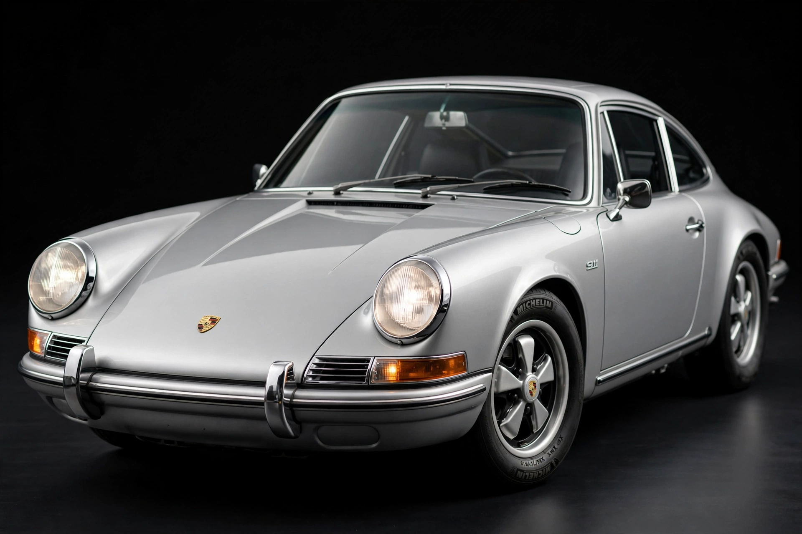

The Porsche 911 (pronounced nine eleven, German: Neunelfer) is a two-door 2+2 rear-engined sports car introduced in September 1964 by Porsche AG of Stuttgart, Germany. It has a rear-mounted flat-six engine and originally air-cooled until the introduction of the 996 series in 1998.
Developed as a larger, more powerful replacement for the 356, designed by Ferdinand "Butzi" Porsche. Originally called the 901, it was renamed 911 after Peugeot claimed rights to three-digit names with a zero in the middle in France.
Original 911 (1964–1989) including 930 Turbo; 964 (1989–1994); 993 (1994–1998), last air-cooled; 996 (1998–2005), first water-cooled; 997 (2005–2012); 991 (2012–2019); 992 (2019–present). Variants include Carrera, Turbo, GT3, GT2, Targa, and Cabriolet.
The 911 is one of the most successful competition cars, winning the 24 Hours of Le Mans GT classes, rally events, and the Daytona and Sebring endurance races through derivatives such as the 935, 959, and RSR.
It was voted fifth in the 1999 Car of the Century poll and is widely regarded as an automotive icon.
See also: Porsche